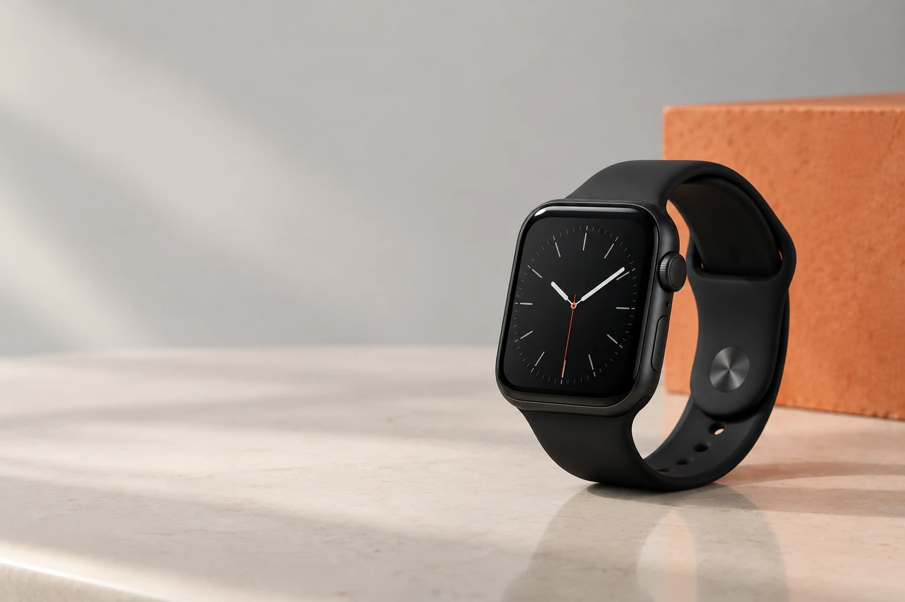

LS Connect iStore · Bacacheri
Boas escolhas.
Boas conexões.

Novos e seminovos divulgados pela lojaVia Colleghi · Curitiba
Qual é a sua conexão?
Encontre seu
próximo passo.
iPhone
Conexões que vão
com você.
Para fotografar, conversar e cuidar da rotina. Conte o que importa no seu próximo aparelho.
- Novos e seminovos divulgados pela LS
- Capacidade e modelo definidos com a equipe
- Disponibilidade confirmada no atendimento
iPad & MacBook
Espaço para
suas ideias.
Estudo, trabalho ou criação: conheça as opções para os seus projetos.
- Conte quais programas e tarefas usa
- Converse sobre tamanho e configuração
- Consulte acessórios e condições atuais
Apple Watch
Seu tempo.
Seu ritmo.
Explore a categoria anunciada pela loja e tire suas dúvidas antes de escolher.
- Escolha por rotina, tamanho e preferência
- Confirme compatibilidade com seu iPhone
- Veja os modelos disponíveis com a LS
A conexão é pessoal
Do primeiro oi
ao seu próximo.
Conheça um registro de unboxing publicado pela LS Connect. A loja atende no Via Colleghi Shopping, no Bacacheri.
Mais momentos no InstagramLoja 28
Av. Pref. Erasto Gaertner, 113

Antes de conversar
O que você
quer saber?
Como consulto novos e seminovos?
Use o canal de WhatsApp publicado pela LS. Informe a categoria que procura e peça os modelos, condições e características atuais.
Onde fica a LS Connect?
No Via Colleghi Shopping, Av. Pref. Erasto Gaertner, 113, loja 28, Bacacheri, Curitiba. Confirme o horário antes da visita.
Posso pedir ajuda para escolher?
Sim: comece contando seu uso e suas preferências no atendimento. Preços, disponibilidade e condições precisam ser confirmados pela equipe.
Conecte-se ao
que vem agora.
Abrir WhatsApp da LSAv. Pref. Erasto Gaertner, 113 · loja 28
Via Colleghi Shopping · Bacacheri, Curitiba. Endereço corroborado pelo post fixado da conta oficial; confirme horário antes de visitar.
(41) 99248-7064Ver no Google Maps